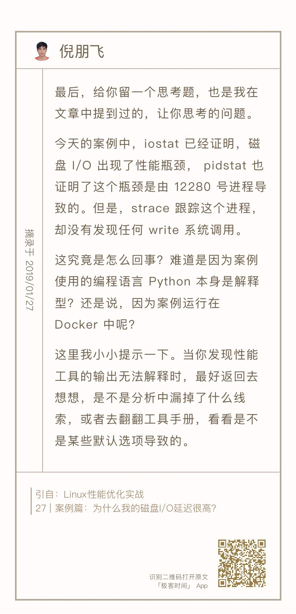
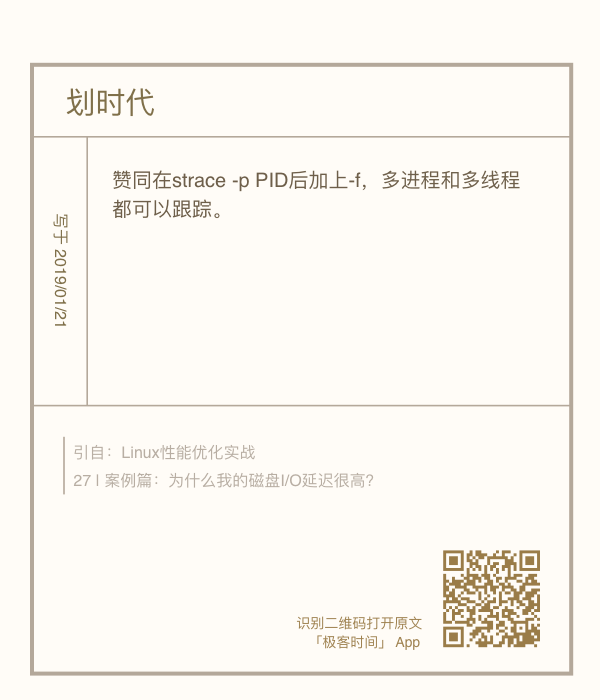
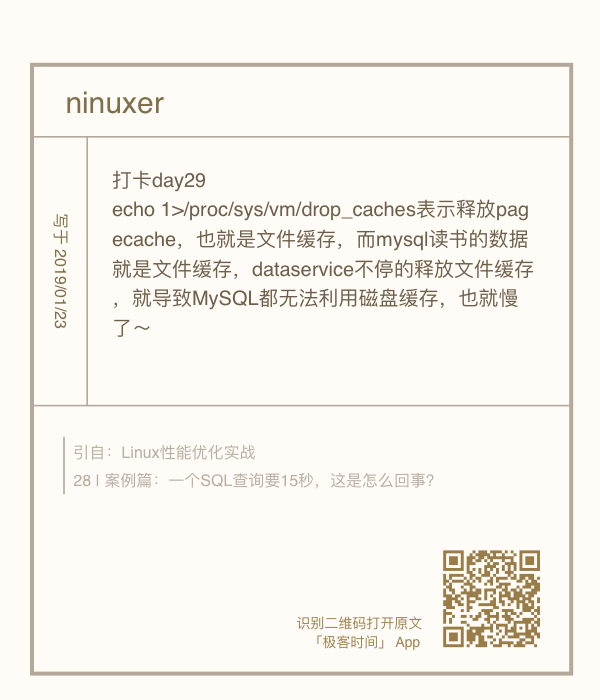

- 00 开篇词 别再让Linux性能问题成为你的绊脚石.md.html
- 01 如何学习Linux性能优化？.md.html
- 02 基础篇：到底应该怎么理解“平均负载”？.md.html
- 03 基础篇：经常说的 CPU 上下文切换是什么意思？（上）.md.html
- 04 基础篇：经常说的 CPU 上下文切换是什么意思？（下）.md.html
- 05 基础篇：某个应用的CPU使用率居然达到100%，我该怎么办？.md.html
- 06 案例篇：系统的 CPU 使用率很高，但为啥却找不到高 CPU 的应用？.md.html
- 07 案例篇：系统中出现大量不可中断进程和僵尸进程怎么办？（上）.md.html
- 08 案例篇：系统中出现大量不可中断进程和僵尸进程怎么办？（下）.md.html
- 09 基础篇：怎么理解Linux软中断？.md.html
- 10 案例篇：系统的软中断CPU使用率升高，我该怎么办？.md.html
- 11 套路篇：如何迅速分析出系统CPU的瓶颈在哪里？.md.html
- 12 套路篇：CPU 性能优化的几个思路.md.html
- 13 答疑（一）：无法模拟出 RES 中断的问题，怎么办？.md.html
- 14 答疑（二）：如何用perf工具分析Java程序？.md.html
- 15 基础篇：Linux内存是怎么工作的？.md.html
- 16 基础篇：怎么理解内存中的Buffer和Cache？.md.html
- 17 案例篇：如何利用系统缓存优化程序的运行效率？.md.html
- 18 案例篇：内存泄漏了，我该如何定位和处理？.md.html
- 19 案例篇：为什么系统的Swap变高了（上）.md.html
- 20 案例篇：为什么系统的Swap变高了？（下）.md.html
- 21 套路篇：如何“快准狠”找到系统内存的问题？.md.html
- 22 答疑（三）：文件系统与磁盘的区别是什么？.md.html
- 23 基础篇：Linux 文件系统是怎么工作的？.md.html
- 24 基础篇：Linux 磁盘I_O是怎么工作的（上）.md.html
- 25 基础篇：Linux 磁盘I_O是怎么工作的（下）.md.html
- 26 案例篇：如何找出狂打日志的“内鬼”？.md.html
- 27 案例篇：为什么我的磁盘I_O延迟很高？.md.html
- 28 案例篇：一个SQL查询要15秒，这是怎么回事？.md.html
- 29 案例篇：Redis响应严重延迟，如何解决？.md.html
- 30 套路篇：如何迅速分析出系统I_O的瓶颈在哪里？.md.html
- 31 套路篇：磁盘 I_O 性能优化的几个思路.md.html
- 32 答疑（四）：阻塞、非阻塞 I_O 与同步、异步 I_O 的区别和联系.md.html
- 33 关于 Linux 网络，你必须知道这些（上）.md.html
- 34 关于 Linux 网络，你必须知道这些（下）.md.html
- 35 基础篇：C10K 和 C1000K 回顾.md.html
- 36 套路篇：怎么评估系统的网络性能？.md.html
- 37 案例篇：DNS 解析时快时慢，我该怎么办？.md.html
- 38 案例篇：怎么使用 tcpdump 和 Wireshark 分析网络流量？.md.html
- 39 案例篇：怎么缓解 DDoS 攻击带来的性能下降问题？.md.html
- 40 案例篇：网络请求延迟变大了，我该怎么办？.md.html
- 41 案例篇：如何优化 NAT 性能？（上）.md.html
- 42 案例篇：如何优化 NAT 性能？（下）.md.html
- 43 套路篇：网络性能优化的几个思路（上）.md.html
- 44 套路篇：网络性能优化的几个思路（下）.md.html
- 45 答疑（五）：网络收发过程中，缓冲区位置在哪里？.md.html
- 46 案例篇：为什么应用容器化后，启动慢了很多？.md.html
- 47 案例篇：服务器总是时不时丢包，我该怎么办？（上）.md.html
- 48 案例篇：服务器总是时不时丢包，我该怎么办？（下）.md.html
- 49 案例篇：内核线程 CPU 利用率太高，我该怎么办？.md.html
- 50 案例篇：动态追踪怎么用？（上）.md.html
- 51 案例篇：动态追踪怎么用？（下）.md.html
- 52 案例篇：服务吞吐量下降很厉害，怎么分析？.md.html
- 53 套路篇：系统监控的综合思路.md.html
- 54 套路篇：应用监控的一般思路.md.html
- 55 套路篇：分析性能问题的一般步骤.md.html
- 56 套路篇：优化性能问题的一般方法.md.html
- 57 套路篇：Linux 性能工具速查.md.html
- 58 答疑（六）：容器冷启动如何性能分析？.md.html
- 加餐（一） 书单推荐：性能优化和Linux 系统原理.md.html
- 加餐（二） 书单推荐：网络原理和 Linux 内核实现.md.html
- 用户故事 “半路出家 ”，也要顺利拿下性能优化！.md.html
- 用户故事 运维和开发工程师们怎么说？.md.html
- 结束语 愿你攻克性能难关.md.html
- 捐赠
32 答疑（四）：阻塞、非阻塞 I_O 与同步、异步 I_O 的区别和联系
你好，我是倪朋飞。
专栏更新至今，四大基础模块的第三个模块——文件系统和磁盘 I/O 篇，我们就已经学完了。很开心你还没有掉队，仍然在积极学习思考和实践操作，并且热情地留言与讨论。
今天是性能优化的第四期。照例，我从 I/O 模块的留言中摘出了一些典型问题，作为今天的答疑内容，集中回复。同样的，为了便于你学习理解，它们并不是严格按照文章顺序排列的。
每个问题，我都附上了留言区提问的截屏。如果你需要回顾内容原文，可以扫描每个问题右下方的二维码查看。
问题1：阻塞、非阻塞 I/O 与同步、异步 I/O 的区别和联系
在文件系统的工作原理篇中，我曾经介绍了阻塞、非阻塞 I/O 以及同步、异步 I/O 的含义，这里我们再简单回顾一下。
首先我们来看阻塞和非阻塞 I/O。根据应用程序是否阻塞自身运行，可以把 I/O 分为阻塞 I/O 和非阻塞 I/O。
所谓阻塞I/O，是指应用程序在执行I/O操作后，如果没有获得响应，就会阻塞当前线程，不能执行其他任务。
所谓非阻塞I/O，是指应用程序在执行I/O操作后，不会阻塞当前的线程，可以继续执行其他的任务。
再来看同步 I/O 和异步 I/O。根据 I/O 响应的通知方式的不同，可以把文件 I/O 分为同步 I/O 和异步 I/O。
所谓同步 I/O，是指收到 I/O 请求后，系统不会立刻响应应用程序；等到处理完成，系统才会通过系统调用的方式，告诉应用程序 I/O 结果。
所谓异步 I/O，是指收到 I/O 请求后，系统会先告诉应用程序 I/O 请求已经收到，随后再去异步处理；等处理完成后，系统再通过事件通知的方式，告诉应用程序结果。
你可以看出，阻塞/非阻塞和同步/异步，其实就是两个不同角度的 I/O 划分方式。它们描述的对象也不同，阻塞/非阻塞针对的是 I/O 调用者（即应用程序），而同步/异步针对的是 I/O 执行者（即系统）。
我举个例子来进一步解释下。比如在 Linux I/O 调用中，
系统调用 read 是同步读，所以，在没有得到磁盘数据前，read 不会响应应用程序。
而 aio_read 是异步读，系统收到 AIO 读请求后不等处理就返回了，而具体的 read 结果，再通过回调异步通知应用程序。
再如，在网络套接字的接口中，
使用 send() 直接向套接字发送数据时，如果套接字没有设置 O_NONBLOCK 标识，那么 send() 操作就会一直阻塞，当前线程也没法去做其他事情。
当然，如果你用了 epoll，系统会告诉你这个套接字的状态，那就可以用非阻塞的方式使用。当这个套接字不可写的时候，你可以去做其他事情，比如读写其他套接字。
问题2：“文件系统”课后思考
在文件系统原理文章的最后，我给你留了一道思考题，那就是执行 find 命令时，会不会导致系统的缓存升高呢？如果会导致，升高的又是哪种类型的缓存呢？
关于这个问题，白华和 coyang 的答案已经很准确了。通过学习Linux 文件系统的原理，我们知道，文件名以及文件之间的目录关系，都放在目录项缓存中。而这是一个基于内存的数据结构，会根据需要动态构建。所以，查找文件时，Linux 就会动态构建不在缓存中的目录项结构，导致 dentry 缓存升高。

事实上，除了目录项缓存增加，Buffer 的使用也会增加。如果你用 vmstat 观察一下，会发现 Buffer 和 Cache 都在增长：
$ vmstat 1
procs -----------memory---------- ---swap-- -----io---- -system-- ------cpu-----
r b swpd free buff cache si so bi bo in cs us sy id wa st
0 1 0 7563744 6024 225944 0 0 3736 0 574 3249 3 5 89 3 0
1 0 0 7542792 14736 236856 0 0 8708 0 13494 32335 8 19 66 7 0
0 1 0 7494452 27280 272284 0 0 12544 0 4550 17084 5 15 68 13 0
0 1 0 7475084 42380 276320 0 0 15096 0 2541 14253 2 6 78 13 0
0 1 0 7455728 57600 280436 0 0 15220 0 2025 14518 2 6 70 22 0
这里，Buffer 的增长是因为，构建目录项缓存所需的元数据（比如文件名称、索引节点等），需要从文件系统中读取。
问题3：“磁盘 I/O 延迟”课后思考
在磁盘 I/O 延迟案例的最后，我给你留了一道思考题。
我们通过 iostat ，确认磁盘 I/O 已经出现了性能瓶颈，还用 pidstat 找出了大量磁盘 I/O 的进程。但是，随后使用 strace 跟踪这个进程，却找不到任何 write 系统调用。这是为什么呢？

很多同学的留言都准确回答了这个问题。比如，划时代和 jeff 的留言都指出，在这个场景中，我们需要加 -f 选项，以便跟踪多进程和多线程的系统调用情况。

你看，仅仅是不恰当的选项，都可能会导致性能工具“犯错”，呈现这种看起来不合逻辑的结果。非常高兴看到，这么多同学已经掌握了性能工具使用的核心思路——弄清楚工具本身的原理和问题。
问题4：“MySQL 案例”课后思考
在 MySQL 案例的最后，我给你留了一个思考题。
为什么 DataService 应用停止后，即使仍没有索引，MySQL 的查询速度还是快了很多，并且磁盘 I/O 瓶颈也消失了呢？

ninuxer 的留言基本解释了这个问题，不过还不够完善。
事实上，当你看到 DataService 在修改 /proc/sys/vm/drop_caches 时，就应该想到前面学过的 Cache 的作用。
我们知道，案例应用访问的数据表，基于 MyISAM 引擎，而 MyISAM 的一个特点，就是只在内存中缓存索引，并不缓存数据。所以，在查询语句无法使用索引时，就需要数据表从数据库文件读入内存，然后再进行处理。
所以，如果你用 vmstat 工具，观察缓存和 I/O 的变化趋势，就会发现下面这样的结果：
$ vmstat 1
procs -----------memory---------- ---swap-- -----io---- -system-- ------cpu-----
r b swpd free buff cache si so bi bo in cs us sy id wa st
# 备注： DataService正在运行
0 1 0 7293416 132 366704 0 0 32516 12 36 546 1 3 49 48 0
0 1 0 7260772 132 399256 0 0 32640 0 37 463 1 1 49 48 0
0 1 0 7228088 132 432088 0 0 32640 0 30 477 0 1 49 49 0
0 0 0 7306560 132 353084 0 0 20572 4 90 574 1 4 69 27 0
0 2 0 7282300 132 368536 0 0 15468 0 32 304 0 0 79 20 0
# 备注：DataService从这里开始停止
0 0 0 7241852 1360 424164 0 0 864 320 133 1266 1 1 94 5 0
0 1 0 7228956 1368 437400 0 0 13328 0 45 366 0 0 83 17 0
0 1 0 7196320 1368 470148 0 0 32640 0 33 413 1 1 50 49 0
...
0 0 0 6747540 1368 918576 0 0 29056 0 42 568 0 0 56 44 0
0 0 0 6747540 1368 918576 0 0 0 0 40 141 1 0 100 0 0
在 DataService 停止前，cache 会连续增长三次后再降回去，这正是因为 DataService 每隔3秒清理一次页缓存。而 DataService 停止后，cache 就会不停地增长，直到增长为 918576 后，就不再变了。
这时，磁盘的读（bi）降低到 0，同时，iowait（wa）也降低到 0，这说明，此时的所有数据都已经在系统的缓存中了。我们知道，缓存是内存的一部分，它的访问速度比磁盘快得多，这也就能解释，为什么 MySQL 的查询速度变快了很多。
从这个案例，你会发现，MySQL 的 MyISAM 引擎，本身并不缓存数据，而要依赖系统缓存来加速磁盘 I/O 的访问。一旦系统中还有其他应用同时运行，MyISAM 引擎就很难充分利用系统缓存。因为系统缓存可能被其他应用程序占用，甚至直接被清理掉。
所以，一般来说，我并不建议，把应用程序的性能优化完全建立在系统缓存上。还是那句话，最好能在应用程序的内部分配内存，构建完全自主控制的缓存，比如 MySQL 的 InnoDB 引擎，就同时缓存了索引和数据；或者，可以使用第三方的缓存应用，比如 Memcached、Redis 等。
今天主要回答这些问题，同时也欢迎你继续在留言区写下疑问和感想，我会持续不断地解答。希望借助每一次的答疑，可以和你一起，把文章知识内化为你的能力，我们不仅在实战中演练，也要在交流中进步。
© 2019 - 2023 Liangliang Lee. Powered by gin and hexo-theme-book.